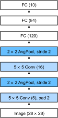

%load_ext d2lbook.tab
tab.interact_select(['mxnet', 'pytorch', 'tensorflow', 'jax'])Réseaux de neurones convolutifs (LeNet)
Nous disposons désormais de tous les ingrédients nécessaires pour assembler un CNN entièrement fonctionnel. Lors de notre première rencontre avec les données d’image, nous avons appliqué un modèle linéaire avec régression softmax (sec_softmax_scratch) et un MLP (sec_mlp-implementation) à des images de vêtements du jeu de données Fashion-MNIST. Pour rendre ces données exploitables, nous avons d’abord aplati chaque image d’une matrice \(28\times28\) en un vecteur de longueur fixe de dimension \(784\), puis nous les avons traitées dans des couches entièrement connectées. Maintenant que nous maîtrisons les couches convolutives, nous pouvons conserver la structure spatiale de nos images. Un avantage supplémentaire du remplacement des couches entièrement connectées par des couches convolutives est que nous bénéficierons de modèles plus parcimonieux nécessitant beaucoup moins de paramètres.
Dans cette section, nous présenterons LeNet, l’un des premiers CNN publiés à avoir attiré une large attention pour ses performances sur les tâches de vision par ordinateur. Le modèle a été introduit par (et nommé d’après) Yann LeCun, alors chercheur aux AT&T Bell Labs, dans le but de reconnaître les chiffres manuscrits dans les images [LeCun.Bottou.Bengio.ea.1998]. Ce travail représentait l’aboutissement d’une décennie de recherche développant la technologie ; l’équipe de LeCun a publié la première étude ayant réussi à entraîner des CNN via rétropropagation [LeCun.Boser.Denker.ea.1989].
À l’époque, LeNet a obtenu des résultats exceptionnels égalant les performances des machines à vecteurs de support (SVM), alors une approche dominante en apprentissage supervisé, atteignant un taux d’erreur de moins de 1 % par chiffre. LeNet a finalement été adapté pour reconnaître les chiffres pour le traitement des dépôts dans les guichets automatiques (ATM). À ce jour, certains distributeurs automatiques utilisent encore le code que Yann LeCun et son collègue Léon Bottou ont écrit dans les années 1990 !
%%tab mxnet
from d2l import mxnet as d2l
from mxnet import autograd, gluon, init, np, npx
from mxnet.gluon import nn
npx.set_np()%%tab pytorch
from d2l import torch as d2l
import torch
from torch import nn%%tab tensorflow
import tensorflow as tf
from d2l import tensorflow as d2l%%tab jax
from d2l import jax as d2l
from flax import linen as nn
import jax
from jax import numpy as jnp
from types import FunctionTypeLeNet
À haut niveau, (LeNet (LeNet-5) se compose de deux parties : (i) un encodeur convolutif composé de deux couches convolutives ; et (ii) un bloc dense composé de trois couches entièrement connectées). L’architecture est résumée dans la img_lenet.
 Les unités de base de chaque bloc convolutif sont
une couche convolutive, une fonction d’activation sigmoïde et une
opération de regroupement moyen (average pooling) ultérieure. Notez que
bien que les ReLU et le regroupement maximal (max-pooling) fonctionnent
mieux, ils n’avaient pas encore été découverts. Chaque couche
convolutive utilise un noyau de \(5\times
5\) et une fonction d’activation sigmoïde. Ces couches mettent en
correspondance des entrées disposées spatialement avec un certain nombre
de cartes de caractéristiques bidimensionnelles, augmentant généralement
le nombre de canaux. La première couche convolutive possède 6 canaux de
sortie, tandis que la seconde en possède 16. Chaque opération de
regroupement de \(2\times2\) (pas de 2)
réduit la dimensionnalité d’un facteur \(4\) via un sous-échantillonnage spatial. Le
bloc convolutif émet une sortie avec une forme donnée par (taille du
lot, nombre de canaux, hauteur, largeur).
Les unités de base de chaque bloc convolutif sont
une couche convolutive, une fonction d’activation sigmoïde et une
opération de regroupement moyen (average pooling) ultérieure. Notez que
bien que les ReLU et le regroupement maximal (max-pooling) fonctionnent
mieux, ils n’avaient pas encore été découverts. Chaque couche
convolutive utilise un noyau de \(5\times
5\) et une fonction d’activation sigmoïde. Ces couches mettent en
correspondance des entrées disposées spatialement avec un certain nombre
de cartes de caractéristiques bidimensionnelles, augmentant généralement
le nombre de canaux. La première couche convolutive possède 6 canaux de
sortie, tandis que la seconde en possède 16. Chaque opération de
regroupement de \(2\times2\) (pas de 2)
réduit la dimensionnalité d’un facteur \(4\) via un sous-échantillonnage spatial. Le
bloc convolutif émet une sortie avec une forme donnée par (taille du
lot, nombre de canaux, hauteur, largeur).
Afin de transmettre la sortie du bloc convolutif au bloc dense, nous devons aplatir chaque exemple du minibatch. En d’autres termes, nous prenons cette entrée à quatre dimensions et la transformons en l’entrée bidimensionnelle attendue par les couches entièrement connectées : pour rappel, la représentation bidimensionnelle que nous souhaitons utilise la première dimension pour indexer les exemples dans le minibatch et la seconde pour donner la représentation vectorielle plate de chaque exemple. Le bloc dense de LeNet comporte trois couches entièrement connectées, avec respectivement 120, 84 et 10 sorties. Comme nous effectuons toujours une classification, la couche de sortie à 10 dimensions correspond au nombre de classes de sortie possibles.
Bien qu’arriver au point où vous comprenez vraiment ce qui se passe à
l’intérieur de LeNet ait pu demander un certain travail, nous espérons
que l’extrait de code suivant vous convaincra que l’implémentation de
tels modèles avec des frameworks d’apprentissage profond modernes est
remarquablement simple. Il suffit d’instancier un bloc
Sequential et d’enchaîner les couches appropriées, en
utilisant l’initialisation de Xavier telle qu’introduite dans la
subsec_xavier.
%%tab pytorch
def init_cnn(module): #@save
"""Initialize weights for CNNs."""
if type(module) == nn.Linear or type(module) == nn.Conv2d:
nn.init.xavier_uniform_(module.weight)%%tab pytorch, mxnet, tensorflow
class LeNet(d2l.Classifier): #@save
"""The LeNet-5 model."""
def __init__(self, lr=0.1, num_classes=10):
super().__init__()
self.save_hyperparameters()
if tab.selected('mxnet'):
self.net = nn.Sequential()
self.net.add(
nn.Conv2D(channels=6, kernel_size=5, padding=2,
activation='sigmoid'),
nn.AvgPool2D(pool_size=2, strides=2),
nn.Conv2D(channels=16, kernel_size=5, activation='sigmoid'),
nn.AvgPool2D(pool_size=2, strides=2),
nn.Dense(120, activation='sigmoid'),
nn.Dense(84, activation='sigmoid'),
nn.Dense(num_classes))
self.net.initialize(init.Xavier())
if tab.selected('pytorch'):
self.net = nn.Sequential(
nn.LazyConv2d(6, kernel_size=5, padding=2), nn.Sigmoid(),
nn.AvgPool2d(kernel_size=2, stride=2),
nn.LazyConv2d(16, kernel_size=5), nn.Sigmoid(),
nn.AvgPool2d(kernel_size=2, stride=2),
nn.Flatten(),
nn.LazyLinear(120), nn.Sigmoid(),
nn.LazyLinear(84), nn.Sigmoid(),
nn.LazyLinear(num_classes))
if tab.selected('tensorflow'):
self.net = tf.keras.models.Sequential([
tf.keras.layers.Conv2D(filters=6, kernel_size=5,
activation='sigmoid', padding='same'),
tf.keras.layers.AvgPool2D(pool_size=2, strides=2),
tf.keras.layers.Conv2D(filters=16, kernel_size=5,
activation='sigmoid'),
tf.keras.layers.AvgPool2D(pool_size=2, strides=2),
tf.keras.layers.Flatten(),
tf.keras.layers.Dense(120, activation='sigmoid'),
tf.keras.layers.Dense(84, activation='sigmoid'),
tf.keras.layers.Dense(num_classes)])%%tab jax
class LeNet(d2l.Classifier): #@save
"""The LeNet-5 model."""
lr: float = 0.1
num_classes: int = 10
kernel_init: FunctionType = nn.initializers.xavier_uniform
def setup(self):
self.net = nn.Sequential([
nn.Conv(features=6, kernel_size=(5, 5), padding='SAME',
kernel_init=self.kernel_init()),
nn.sigmoid,
lambda x: nn.avg_pool(x, window_shape=(2, 2), strides=(2, 2)),
nn.Conv(features=16, kernel_size=(5, 5), padding='VALID',
kernel_init=self.kernel_init()),
nn.sigmoid,
lambda x: nn.avg_pool(x, window_shape=(2, 2), strides=(2, 2)),
lambda x: x.reshape((x.shape[0], -1)), # flatten
nn.Dense(features=120, kernel_init=self.kernel_init()),
nn.sigmoid,
nn.Dense(features=84, kernel_init=self.kernel_init()),
nn.sigmoid,
nn.Dense(features=self.num_classes, kernel_init=self.kernel_init())
])Nous avons pris une certaine liberté dans la reproduction de LeNet dans la mesure où nous avons remplacé la couche d’activation gaussienne par une couche softmax. Cela simplifie grandement l’implémentation, notamment en raison du fait que le décodeur gaussien est rarement utilisé de nos jours. À part cela, ce réseau correspond à l’architecture originale de LeNet-5.
:begin_tab:pytorch, mxnet, tensorflow Voyons ce qui se
passe à l’intérieur du réseau. En faisant passer une image à canal
unique (noir et blanc) de \(28 \times
28\) à travers le réseau et en imprimant la forme de sortie à
chaque couche, nous pouvons inspecter le modèle pour
nous assurer que ses opérations correspondent à ce que nous attendons de
la img_lenet_vert. :end_tab:
:begin_tab:jax Voyons ce qui se passe à l’intérieur du
réseau. En faisant passer une image à canal unique (noir et blanc) de
\(28 \times 28\) à travers le réseau et
en imprimant la forme de sortie à chaque couche, nous pouvons
inspecter le modèle pour nous assurer que ses
opérations correspondent à ce que nous attendons de la img_lenet_vert.
Flax fournit nn.tabulate, une méthode astucieuse pour
résumer les couches et les paramètres de notre réseau. Ici, nous
utilisons la méthode bind pour créer un modèle lié. Les
variables sont maintenant liées à la classe d2l.Module,
c’est-à-dire que ce modèle lié devient un objet à état qui peut ensuite
être utilisé pour accéder à l’attribut d’objet Sequential
net et aux layers à l’intérieur. Notez que la
méthode bind ne doit être utilisée que pour
l’expérimentation interactive et ne remplace pas directement la méthode
apply. :end_tab:

%%tab mxnet, pytorch
@d2l.add_to_class(d2l.Classifier) #@save
def layer_summary(self, X_shape):
X = d2l.randn(*X_shape)
for layer in self.net:
X = layer(X)
print(layer.__class__.__name__, 'output shape:\t', X.shape)
model = LeNet()
model.layer_summary((1, 1, 28, 28))%%tab tensorflow
@d2l.add_to_class(d2l.Classifier) #@save
def layer_summary(self, X_shape):
X = d2l.normal(X_shape)
for layer in self.net.layers:
X = layer(X)
print(layer.__class__.__name__, 'output shape:\t', X.shape)
model = LeNet()
model.layer_summary((1, 28, 28, 1))%%tab jax
@d2l.add_to_class(d2l.Classifier) #@save
def layer_summary(self, X_shape, key=d2l.get_key()):
X = jnp.zeros(X_shape)
params = self.init(key, X)
bound_model = self.clone().bind(params, mutable=['batch_stats'])
_ = bound_model(X)
for layer in bound_model.net.layers:
X = layer(X)
print(layer.__class__.__name__, 'output shape:\t', X.shape)
model = LeNet()
model.layer_summary((1, 28, 28, 1))Notez que la hauteur et la largeur de la représentation à chaque couche tout au long du bloc convolutif sont réduites (par rapport à la couche précédente). La première couche convolutive utilise deux pixels de remplissage pour compenser la réduction de hauteur et de largeur qui résulterait autrement de l’utilisation d’un noyau \(5 \times 5\). Soit dit en passant, la taille de l’image de \(28 \times 28\) pixels dans le jeu de données original MNIST OCR est le résultat du rognage de deux rangées (et colonnes) de pixels à partir des scans originaux qui mesuraient \(32 \times 32\) pixels. Cela a été fait principalement pour gagner de l’espace (une réduction de 30 %) à une époque où les mégaoctets comptaient.
En revanche, la seconde couche convolutive renonce au remplissage, et ainsi la hauteur et la largeur sont toutes deux réduites de quatre pixels. À mesure que nous montons dans la pile de couches, le nombre de canaux augmente couche après couche, passant de 1 dans l’entrée à 6 après la première couche convolutive et 16 après la seconde couche convolutive. Cependant, chaque couche de regroupement divise par deux la hauteur et la largeur. Enfin, chaque couche entièrement connectée réduit la dimensionnalité, émettant finalement une sortie dont la dimension correspond au nombre de classes.
Entraînement
Maintenant que nous avons implémenté le modèle, lançons une expérience pour voir comment le modèle LeNet-5 se comporte sur Fashion-MNIST.
Bien que les CNN aient moins de paramètres, ils peuvent tout de même
être plus coûteux à calculer que des MLP de profondeur similaire, car
chaque paramètre participe à beaucoup plus de multiplications. Si vous
avez accès à un GPU, c’est peut-être le bon moment pour le mettre à
contribution afin d’accélérer l’entraînement. Notez que la classe
d2l.Trainer s’occupe de tous les détails. Par défaut, elle
initialise les paramètres du modèle sur les appareils disponibles. Tout
comme pour les MLP, notre fonction de perte est l’entropie croisée, et
nous la minimisons via une descente de gradient stochastique par
minibatch.
%%tab pytorch, mxnet, jax
trainer = d2l.Trainer(max_epochs=10, num_gpus=1)
data = d2l.FashionMNIST(batch_size=128)
model = LeNet(lr=0.1)
if tab.selected('pytorch'):
model.apply_init([next(iter(data.get_dataloader(True)))[0]], init_cnn)
trainer.fit(model, data)%%tab tensorflow
trainer = d2l.Trainer(max_epochs=10)
data = d2l.FashionMNIST(batch_size=128)
with d2l.try_gpu():
model = LeNet(lr=0.1)
trainer.fit(model, data)Résumé
Nous avons fait des progrès significatifs dans ce chapitre. Nous sommes passés des MLP des années 1980 aux CNN des années 1990 et du début des années 2000. Les architectures proposées, par exemple sous la forme de LeNet-5, restent pertinentes, même à ce jour. Il vaut la peine de comparer les taux d’erreur sur Fashion-MNIST réalisables avec LeNet-5 à la fois aux meilleurs possibles avec les MLP (sec_mlp-implementation) et à ceux avec des architectures nettement plus avancées telles que ResNet (sec_resnet). LeNet est beaucoup plus proche de cette dernière que de la première. L’une des principales différences, comme nous le verrons, est que des capacités de calcul accrues ont permis des architectures nettement plus complexes.
Une seconde différence est la relative facilité avec laquelle nous avons pu implémenter LeNet. Ce qui était autrefois un défi d’ingénierie valant des mois de code C++ et d’assembleur, d’ingénierie pour améliorer SN, un ancien outil d’apprentissage profond basé sur Lisp [Bottou.Le-Cun.1988], et enfin d’expérimentation avec des modèles peut désormais être accompli en quelques minutes. C’est ce boost incroyable de productivité qui a énormément démocratisé le développement de modèles d’apprentissage profond. Dans le prochain chapitre, nous nous enfoncerons dans ce terrier du lapin pour voir où cela nous mène.
Exercices
- Modernisons LeNet. Implémentez et testez les changements suivants :
- Remplacez le regroupement moyen par le regroupement maximal (max-pooling).
- Remplacez la couche softmax par ReLU.
- Essayez de modifier la taille du réseau de style LeNet pour
améliorer sa précision en plus du regroupement maximal et de ReLU.
- Ajustez la taille de la fenêtre de convolution.
- Ajustez le nombre de canaux de sortie.
- Ajustez le nombre de couches de convolution.
- Ajustez le nombre de couches entièrement connectées.
- Ajustez les taux d’apprentissage et d’autres détails d’entraînement (par exemple, l’initialisation et le nombre d’époques).
- Essayez le réseau amélioré sur le jeu de données MNIST original.
- Affichez les activations de la première et de la seconde couche de LeNet pour différentes entrées (par exemple, des pulls et des manteaux).
- Qu’advient-il des activations lorsque vous fournissez des images radicalement différentes au réseau (par exemple, des chats, des voitures ou même du bruit aléatoire) ?
:begin_tab:mxnet Discussions :end_tab:
:begin_tab:pytorch Discussions :end_tab:
:begin_tab:tensorflow Discussions :end_tab:
:begin_tab:jax Discussions :end_tab: